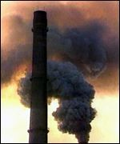

<html>


<!-- Mirrored from www.exitmundi.nl/hydroxyl.htm by HTTrack Website Copier/3.x [XR&CO'2014], Mon, 28 Jun 2021 00:55:38 GMT -->
<!-- Added by HTTrack --><meta http-equiv="content-type" content="text/html;charset=UTF-8" /><!-- /Added by HTTrack -->
<head>
<meta http-equiv="Content-Language" content="en-us">
<meta http-equiv="Content-Type" content="text/html; charset=windows-1252">
<meta name="GENERATOR" content="Microsoft FrontPage 4.0">
<meta name="ProgId" content="FrontPage.Editor.Document">
<title>A Black Hole Ate My Laboratory</title>
</head>

<body bgcolor="#000000" text="#FFFFFF" link="#00FFFF" vlink="#FF00FF">

<blockquote>
  <p class="MsoNormal" style="line-height: 12.0pt; mso-hyphenate: none" align="center"><span lang="EN-US" style="letter-spacing:-.15pt"><o:p>
  </o:p>
  </span></p>
  <blockquote>
  <p class="MsoNormal" style="line-height: 14pt; mso-hyphenate: none" align="center"><span lang="EN-US" style="letter-spacing:-.15pt"><font face="MS Sans Serif"><span style="mso-fareast-font-family: Times New Roman; mso-ansi-language: EN-US; mso-fareast-language: EN-US; mso-bidi-language: AR-SA; letter-spacing: -.15pt" lang="EN-US"><font color="#FF9900" size="4" face="MS Sans Serif"><span style="mso-fareast-font-family: Times New Roman; mso-ansi-language: EN-US; mso-fareast-language: EN-US; mso-bidi-language: AR-SA; letter-spacing: -.15pt">If
  you think you’ve seen pollution <span>--</span> just wait. One day, we could
  suffocate in <span>a killer </span>smog never before witnessed on Earth. There
  are some pretty nasty clues that the clean-up system of the atmosphere is on
  the verge of collapsing. And when that happens, better go build yourself a
  glass dome to live under!</span></font></span><o:p>
  </o:p>
  </font></span></p>
  </blockquote>
  <p class="MsoNormal"><div align="right">
    <table border="0" width="120" align="right" height="600">
      <tr>
        <td width="100%"><script type="text/javascript"><!--
google_ad_client = "pub-5046374505441754";
google_ad_width = 120;
google_ad_height = 600;
google_ad_format = "120x600_as";
google_ad_type = "text_image";
//2007-01-16: Indexbreed-grijzig, Grafieten hap
google_ad_channel = "9064366162+6276089418";
google_color_border = "CC0000";
google_color_bg = "CCCCCC";
google_color_link = "CC0000";
google_color_text = "333333";
google_color_url = "666666.html";
//--></script>
<script type="text/javascript"
  src="../pagead2.googlesyndication.com/pagead/f.txt">
</script></td>
      </tr>
    </table>
  </div><font face="MS Sans Serif">It is eco-disaster at its very
  worst -- a cruel apocalypse that could kill billions of people, and
  change the face of the Earth forever. One day, everything seems quite fine.
  But then, all hell breaks loose.</font>
  <p class="MsoNormal"><font face="MS Sans Serif">Suddenly, the pollution from
  our factories and cars just won't go away anymore. It is as if the cleaning
  firm of the planet has decided to quit. Polluting chemicals don’t rain down
  anymore, and seem to refuse to dissolve in the oceans. They just hang around,
  forming dense, thick mists of dirt. Of course, we’re having our share of
  smog
  already. But it doesn’t compare to the Mother of all Smogs that is being unleashed
  now.</font></p>
  <p class="MsoNormal"><font face="MS Sans Serif"><font color="#FF9900">The consequences are dramatic.</font>
  Within years, huge parts of the atmosphere become a foul reeking, toxic brew
  of exhaust gases, soot and factory filth. Asthma and lung diseases become the
  world’s biggest killers, smog one of its worst problems. Big cities like
  Tokyo, Athens and New York are permanently covered in dense death fogs.
  Wearing a mouth cap or a gas mask outdoors becomes common as wearing shoes.
  But still, people die by the millions.</font></p>
  <p class="MsoNormal"><font face="MS Sans Serif">And it goes beyond that. The
  wind pushes the toxic clouds around from one place to another, bringing death
  and destruction to the countryside. Animals become sickly, crops turn brown
  and whither. Forests die on a vast scale, and huge forest fires consume the
  remains. The weather forecasts will highlight what pollution goes where,
  instead of silly nonsense like whether we will have rain or sunshine tomorrow.</font></p>
  <p class="MsoNormal"><font face="MS Sans Serif">In the meantime, hundreds of
  millions of eco-refugees will try to escape, causing uproars, wars and famines. In the
  rich countries, people will build huge domes over their cities, with purified
  air in it. But in the poorer countries, the smog disaster strikes all the
  harder.</font></p>
  <p class="MsoNormal"><font face="MS Sans Serif" color="#FFFF00" size="4">The
  hydroxyl apocalypse</font><font face="MS Sans Serif"><o:p>
  </o:p>
  </font></p>
  <p class="MsoNormal"><font face="MS Sans Serif">What you're witnessing is a
  phenomenon known among scientists as the ‘hydroxyl collapse’, or, more
  technically, the breakdown of the 'oxidizing capacity' of the atmosphere. Don’t
  worry if that doesn’t ring a bell -- it’s a rather obscure thing.
  Scientists worry about the ozone layer, greenhouse gases and stuff like CFCs
  and CFKs -- not hydroxyl.</font></p>
  <p class="MsoNormal"><font face="MS Sans Serif">That’s partly because hydroxyl is a
  benign little substance. You could call it the detergent of the atmosphere.
  The stuff (formula: OH-) attacks smoke from our factories, cars and chimneys,
  and makes it soluble in water. After hydroxyl’s touch, pollution can rain
  down and vanish in the soil, or dissolve in the ocean.</font></p>
  <p class="MsoNormal"><font face="MS Sans Serif"><font color="#FF9900">But no hydroxyl, and we’re
  in trouble.</font> Evil noxious gases like sulphuric and nitrogen oxides would pile
  up. No hydroxyl, and smoke and soot would accumulate in the atmosphere.</font></p>
  <p class="MsoNormal"><font face="MS Sans Serif">And ‘no hydroxyl’ could be
  where we’re heading. In the 1980s, NASA scientists came up with figures that
  suggested the amount of hydroxyl in the air has dropped by 25 percent since
  1950. And in 2001, the UN’s Intergovernmental Panel on Climate Change (IPCC)
  predicted a 20 percent drop of hydroxyl activity in the century to come.</font></p>
  <div align="right">
    <table border="1" cellpadding="3" cellspacing="3" width="40%" align="right" bordercolor="#FF9900">
      <tr>
        <td width="100%">
          <p class="MsoNormal" align="center"><font face="MS Sans Serif" size="2" color="#FFFF00"><b>So...
          What is this hydroxyl stuff, anyway?</b></font></p>
          <p class="MsoNormal"><font face="MS Sans Serif" size="2" color="#FFFF00">Hydroxyl
          (OH-) is a fleeting, highly reactive substance that pops in and out of
          existence everywhere around us. Roughly, a hydroxyl 'radical' is
          around only for a second at most, because it reacts so readily with
          other compounds. Hydroxyl shows up when you bombard water vapor with
          ultraviolet radiation.</font></p>
          <p class="MsoNormal"><font face="MS Sans Serif" size="2" color="#FFFF00">There’s
          only a tiny fraction of hydroxyl in the air. Scoop up a chunk of air
          as big as the Mount Everest, and you will find hardly enough hydroxyl
          to fill a bucket!</font></p>
          <p class="MsoNormal"><font face="MS Sans Serif" size="2" color="#FFFF00">Still,
          it’s effective stuff. It ‘oxidizes’ gases like carbon monoxide
          (CO), carbon dioxide (CO2), nitrogen oxides (NOx), sulphuric dioxide
          (SO2) and methane (CH4). This means that the gases get prepared so
          that they chemically bind to water -- and that they can rain down and
          end up in the soil or in the ocean.</font></td>
      </tr>
    </table>
  </div>
  <p class="MsoNormal"><font face="MS Sans Serif">Then, in 1993, Sasha Madronich,
  a researcher working for the US government, made a frightening discovery. At
  some point, Madronich calculated, pollution will overwhelm the hydroxyl
  chemistry. There will be so much filth around, the detergent will simply give
  up -- and quit. In fact, over some polluted areas, the hydroxyl shutdown is
  happening already, Madronich points out.</font></p>
  <p class="MsoNormal"><font face="MS Sans Serif"><font color="#FF9900">Okay, so we’d just cut down
  the pollution, right?</font> Unfortunately, that won’t help. The calculations show
  that once the hydroxyl collapse has kicked in, there is no turning back. A
  chain reaction will set in, emptying the atmosphere of hydroxyl. Shutting down
  a few factories won’t bring the clean-up system back on.</font></p>
  <p class="MsoNormal"><font face="MS Sans Serif">There’s a weird twist, too.
  Hydroxyl is formed under the influence of ultraviolet radiation from the
  Sun -- the sort of radiation that causes skin cancer. So it may be actually a
  bad thing that the hole in the ozone layer is currently closing up again. The
  ozone layer protects us from ultraviolet radiation. But it also puts a break
  on hydroxyl formation.</font></p>
  <p class="MsoNormal"><font face="MS Sans Serif"><font color="#FF9900">Now that’s
  some funny paradox. </font>
  We might end up sitting under a glass bell -- thanks to the fact that the ozone
  layer is in tip-top condition again!</font></p>
  <p class="MsoNormal"><font face="MS Sans Serif">Aw, these climate issues...
  Why are they always so terribly complicated?</font></p>
  <blockquote>
    <p ALIGN="left">&nbsp;</p>
    <div align="right">
      <table border="0" align="right">
        <tr>
          <td><a href="mailto:mke@xs4all.nl"></a></td>
          <td><a href="intro2.html"></a></td>
        </tr>
      </table>
    </div>
    <p>&nbsp;</p>
  </blockquote>
  <p>&nbsp;</p>
  <p class="MsoNormal"><font face="MS Sans Serif" color="#FF9900" size="4">LINKS
  OUT:</font></p>
  <p class="MsoNormal"><a href="http://www-as.harvard.edu/chemistry/trop/publications/jacob2000/text.html" target="_blank"><font face="MS Sans Serif">The
  oxidizing capacity of the atmosphere</font></a></p>
  <p class="MsoNormal"><a href="http://journals.iranscience.net:800/Default/www.newscientist.com/hottopics/pollution/pollutionscenario.jsp" target="_blank"><font face="MS Sans Serif">Pollution
  scenario</font></a></p>
  <p class="MsoNormal"><br>
<div align="center">
    <center>
    <table border="0" width="728" height="90">
      <tr>
        <td width="100%"><script type="text/javascript"><!--
google_ad_client = "pub-5046374505441754";
google_ad_width = 728;
google_ad_height = 90;
google_ad_format = "728x90_as";
google_ad_type = "text_image";
//2007-01-16: kustblauw plat
google_ad_channel = "4730799746";
google_color_border = "336699";
google_color_bg = "FFFFFF";
google_color_link = "0000FF";
google_color_text = "000000";
google_color_url = "008000.html";
//--></script>
<script type="text/javascript"
  src="../pagead2.googlesyndication.com/pagead/f.txt">
</script></td>
      </tr>
    </table>
    </center>
  </div>


  <p class="MsoNormal">&nbsp;</p>
</blockquote>


<p><!-- End Webstats4U code -->
</p>
<p align="center"><font size="2">All texts Copyright © Exit Mundi / AW Bruna
2000-2007.<br>
You're not allowed to copy, edit, publish, print or make public any material
from this website without written permission by Exit Mundi.</font></p>


<!-- Mirrored from www.exitmundi.nl/hydroxyl.htm by HTTrack Website Copier/3.x [XR&CO'2014], Mon, 28 Jun 2021 00:55:40 GMT -->
</html>
